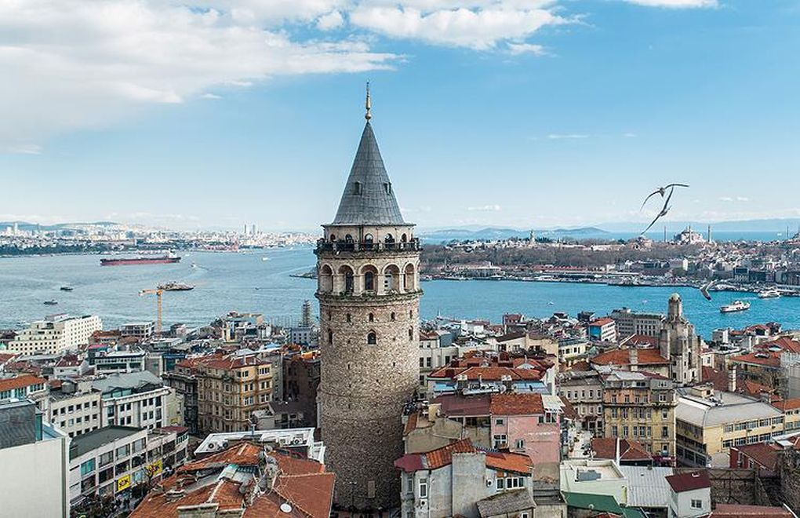

Day 1
Commencez la journée par un petit déjeuner Turc dans un endroit à Galataport.Ensuite, savourez une tasse de café ou un thé Turc sur la belle Terrace du café Pierre Loti qui se trouve au sommet de la colline Sultan Eyup.
Commencez la journée par un petit déjeuner Turc dans un endroit à Galataport.Ensuite, savourez une tasse de café ou un thé Turc sur la belle Terrace du café Pierre Loti qui se trouve au sommet de la colline Sultan Eyup.
Le soir : départ pour dîner et assister à une soirée spectacle sur l’une des plus belles croisières orientales sur le Bosphore, soirée & Show oriental
Départ vers Sapanca & Masukiye.On profite du moment avec les quads-safari.qui commence devant les cascades, puis au milieu des forêts et atteint le plus haut sommet de la montagne où il y a une vue sur le village et tout le lac de Masukiya.
Excursion aux îles des princesses, un archipel de neuf îles dans la mer Marmara.Visite de la principale l’île Buyukada, Vous profiterez d'un tour panoramique en voiture électrique pour découvrir la beauté de l’île
Préparez-vous à être impressionné par la magnifique architecture d'Istanbul Visitez le palais de Topkapi pour avoir un aperçu du style de vie somptueux des sultans ottomans et de leur harem
Croisière sur le Bosphore. Départ pour une promenade de 3h00 en bateau sur le Bosphore pour contempler la silhouette d’Istanbul avec ses palais, ses mosquées et ses maisons en bois typiques
Pack Standard comprends :
Pack Standard comprends :